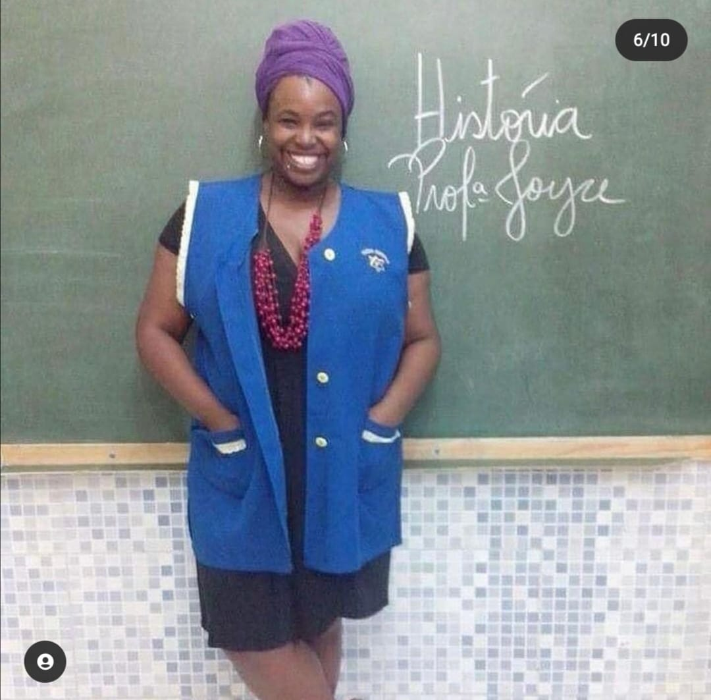
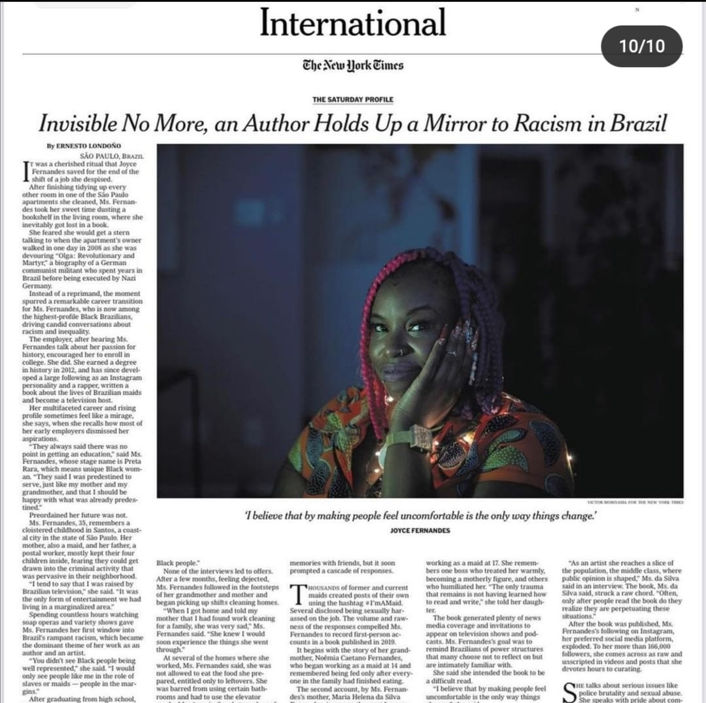
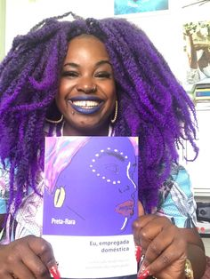
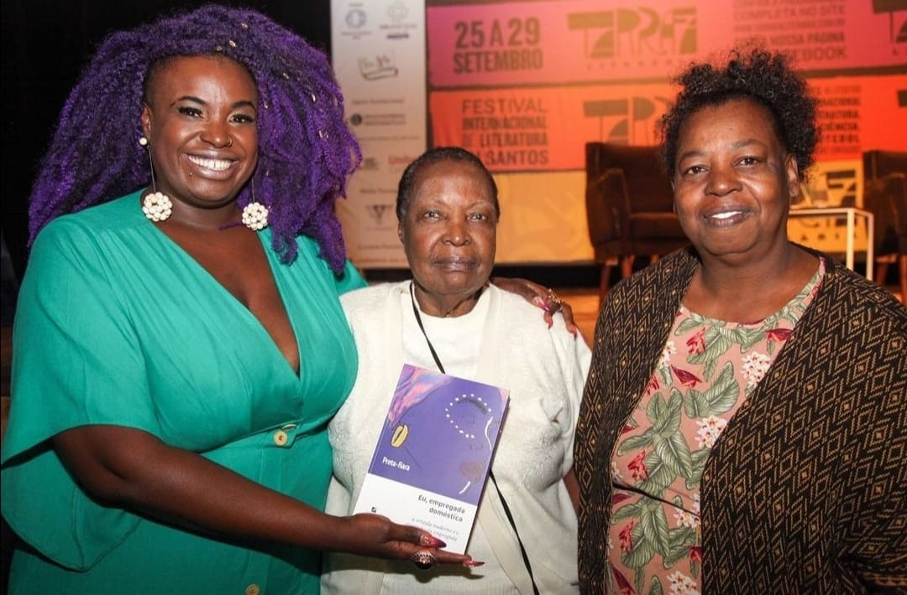

The future is female coders.
Saiba mais
Joyce Fernandes virou Preta Rara em 2005
Rapper, turbanista, professora de história, modelo Plus Size, poetisa, idealizadora da página Eu Empregada Doméstica, que deu origem a um livro em 2019, Joyce Fernandes virou Preta Rara em 2005, quando criou um dos primeiros grupos de rap femininos em Santos, SP. E contrariando a previsão da ex-patroa, durante o período que era empregada doméstica, Preta Rara se formou em História da sua cidade em 2011 e lecionou durante seis anos em um colégio particular de periferia da cidade.
Seu trabalho contra o preconceito alarga-se também a questões de corpo, sendo uma ativista contra a discriminação de mulheres gordas. A rapper e arte-educadora já se acostumou a ouvir por aí que a sua fala “incomoda”. Faz sentido. Foram anos de silêncio e outros tantos de desabafo só com a caneta e o papel.
Preta Rara sorrindo e brindando seu sucesso
Foram muitas as situações de abuso pelas quais passou durante quase uma década trabalhando em casas de classe média na baixada santista. Lembra principalmente de quando foi proibida de comer da própria comida que preparava, todos os dias, para uma das famílias. Ou de quando a impediram de usar o banheiro principal de uma das casas porque o “banheiro das empregadas” estava entupido.
Professora Joyce Fernandes
“Eu não conseguia emprego em Santos. Demorei muito para entender que currículo com foto e boa aparência nunca é personificado numa pessoa preta. Quando contei para a minha mãe que tinha arranjado serviço em uma casa, ela começou a chorar. Disse que não queria isso para mim, mas eu fui. Foram os piores sete anos da minha vida”, conta.
Preta Rara no jornal New York Times
Decidiu expor os casos na internet, por meio da página “Eu, empregada doméstica”, que hoje já tem mais de 140 mil curtidas, projeção internacional e centenas de histórias de mulheres de todo o país. “A gente recebe cada relato. Tem uma senhora, trabalhadora doméstica, que deixa um pote de margarina para poder urinar na área de serviço, dentro do potinho.”
Mostra a capa do livro
“A senzala moderna é o quartinho da empregada” – é com essa analogia e subtítulo que Preta Rara lança em 2019 o seu primeiro livro intitulado “Eu, Empregada Doméstica" (Edições Letramento). A obra foi lançada durante a Festa Literária das Periferias (FLUP), no Rio de Janeiro. O livro garantiu-lhe atenção na mídia internacional, nomeadamente na revista M do jornal francês Le Monde, bem como no New York Times.
Com sua avó e sua mãe no lançamento de seu livro
Nascida em Janeiro de 1989, em São Paulo, se formou na faculdade de Comunicação Social com habilitação em RTV em 2010. Atualmente está em transição de carreira para a área de TI, estudando Programação na {reprograma}